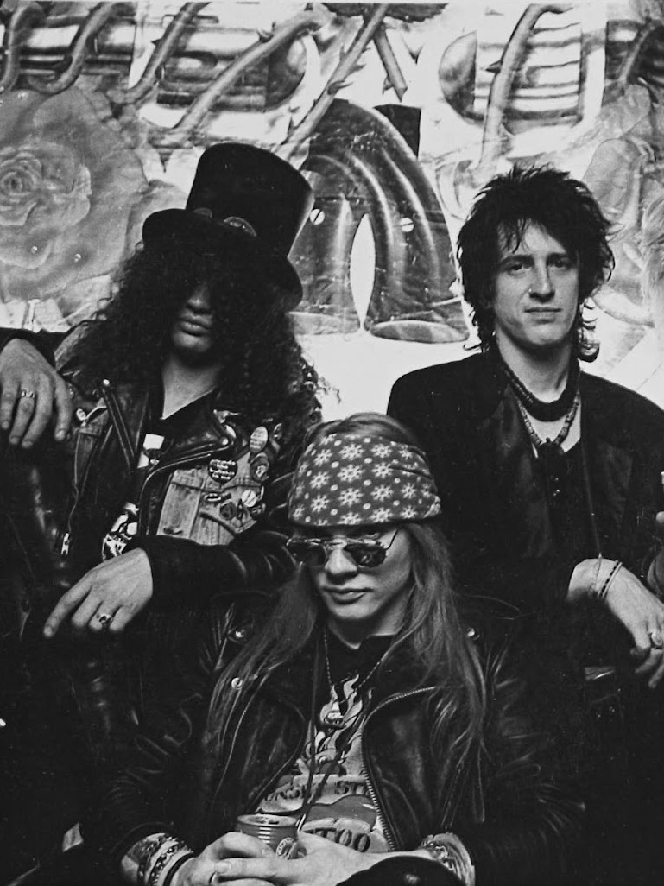

Rock Clássico: A História do Rock dos Anos 60 a 90
Bem-vindo ao Rock Clássico, um portal dedicado aos grandes nomes, álbuns e momentos que moldaram o gênero mais influente da música moderna.

A origem do rock
O rock surgiu nos Estados Unidos, na década de 1950 , quando alguns músicos começaram a incorporar a guitarra elétrica em suas apresentações, enquanto os vocalistas passaram a interpretar as canções com vozes mais fortes e marcantes.
Durante os anos 1950, o rock ganhou popuaridade rapidamente entre os jovens, que se identificaram com seu ritmo animado, intenso e cheio de energial. Suas letras também tiveram um papel importante nesse processo, pois muitas expressavam críticas e questionamentos ao sistema político e cultural dos Estados Unidos naquela época.
Os primeiros cantores que marcaram o surgimento do rock apresentavam, em sua maioria, vozes graves e roucas, sendo muitos deles negros. Suas performances também chamavam a atenção pela expressividade, pela sensualidade e pela energia transmitida ao som da guitarra elétrica.